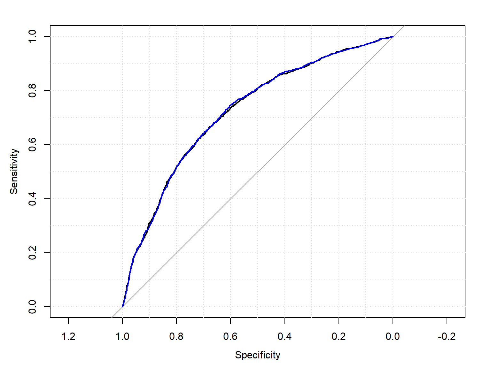

library(haven)
dat<-url("https://github.com/coreysparks/data/blob/master/ZZIR62FL.DTA?raw=true")
model.dat<-read_dta(dat)5 Classification and Cross-Validation
5.1 Classification models
I would suggest you read section 5.1 of Introduction to Statistical Learning to get a full treatment of this topic.
In classification methods, we are typically interested in using some observed characteristics of a case to predict a binary categorical outcome. This can be extended to a multi-category outcome, but the largest number of applications involve a 1/0 outcome.
In these examples, we will use the Demographic and Health Survey Model Data. These are based on the DHS survey, but are publicly available and are used to practice using the DHS data sets, but don’t represent a real country.
In this example, we will use the outcome of contraceptive choice (modern vs other/none) as our outcome.
Here we recode some of our variables and limit our data to those women who are not currently pregnant and who are sexually active.
library(dplyr)
Attaching package: 'dplyr'The following objects are masked from 'package:stats':
filter, lagThe following objects are masked from 'package:base':
intersect, setdiff, setequal, unionmodel.dat2<-model.dat%>%
mutate(region = v024,
modcontra= as.factor(ifelse(v364 ==1,"Modcontra", "NoModContra")),
age = cut(v012, breaks = 5),
livchildren=v218,
educ = v106,
currpreg=v213,
knowmodern=ifelse(v301==3, 1, 0),
age2=v012^2,
rural = ifelse(v025==2, 1,0),
wantmore = ifelse(v605%in%c(1,2), 1, 0))%>%
filter(currpreg==0, v536>0)%>% #notpreg, sex active
dplyr::select(caseid, region, modcontra,age, age2,livchildren, educ, knowmodern, rural, wantmore)knitr::kable(head(model.dat2))| caseid | region | modcontra | age | age2 | livchildren | educ | knowmodern | rural | wantmore |
|---|---|---|---|---|---|---|---|---|---|
| 1 1 2 | 2 | NoModContra | (28.6,35.4] | 900 | 4 | 0 | 1 | 1 | 1 |
| 1 4 2 | 2 | NoModContra | (35.4,42.2] | 1764 | 2 | 0 | 1 | 1 | 0 |
| 1 4 3 | 2 | NoModContra | (21.8,28.6] | 625 | 3 | 1 | 1 | 1 | 0 |
| 1 5 1 | 2 | NoModContra | (21.8,28.6] | 625 | 2 | 2 | 1 | 1 | 1 |
| 1 6 2 | 2 | NoModContra | (35.4,42.2] | 1369 | 2 | 0 | 1 | 1 | 1 |
| 1 6 3 | 2 | NoModContra | (15,21.8] | 289 | 0 | 2 | 0 | 1 | 1 |
5.2 Cross-validation of predictive models
The term cross-validation refers to fitting a model on a subset of data and then testing it on another subset of the data. Typically this process is repeated several times.
The simplest way of doing this is to leave out a single observation, refit the model without it in the data, then predict its value using the rest of the data. This is called hold out cross-validation.
K-fold cross-validation is a process where you leave out a “group” of observations, it is as follows:
- Randomize the data
- Split the data into k groups, where k is an integer
- For each of the k groups,
- Take one of the groups as a hold out test set
- Use the other k-1 groups as training data
- Fit a model using the data on the k-1 groups, and test it on the hold out group
- Measure predictive accuracy of that model, and throw the model away!
- Summarize the model accuracy over the measured model accuracy metrics
A further method is called leave one out, or LOO cross-validation. This combines hold out and k-fold cross-validation.
6 Why?
By doing this, we can see how model accuracy is affected by particular individuals, and overall allows for model accuracy to be measured repeatedly so we can assess things such as model tuning parameters.
If you remember from last time, the regression partition (rpart) analysis depended upon us choosing a good value for the complexity parameter, CP. In a cross-validation analysis, we can use the various resamplings of the data to examine the model’s accuracy sensitivity to alternative values of this parameter.
This evaluation can either be done systematically, along a grid, or using a random search.
6.1 Alternative accuracy measures
We talked last time about using model accuracy as a measure of overall fit. This was calculated using the observed and predicted values of our outcome. For classification model, another commonly used metric of model predictive power is the Receiver Operating Characteristics (ROC) curve. This is a probability curve, and is often accompanied by the area under the curve (AUC) measure, which summarizes the separability of the classes. Together they tell you how capable the model is of determining difference between the classes in the data. The higher the values of these, the better, and they are both bound on (0,1).
A nice description of these are found here.
6.2 Regression partition tree
As we saw in the first working group example, the regression tree is another common technique used in classification problems. Regression or classification trees attempt to find optimal splits in the data so that the best classification of observations can be found.
6.2.1 Create design matrix
If we have a mixture of factor variables and continuous predictors in our analysis, it is best to set up the design matrix for our models before we run them. Many methods within caret won’t use factor variables correctly unless we set up the dummy variable representations first.
datmat<-model.matrix(~factor(region)-1+factor(age)+livchildren+rural+wantmore+factor(educ)-1, data=model.dat2)
datmat<-data.frame(datmat)
datmat$modcontra<- model.dat2$modcontra
head(datmat) factor.region.1 factor.region.2 factor.region.3 factor.region.4
1 0 1 0 0
2 0 1 0 0
3 0 1 0 0
4 0 1 0 0
5 0 1 0 0
6 0 1 0 0
factor.age..21.8.28.6. factor.age..28.6.35.4. factor.age..35.4.42.2.
1 0 1 0
2 0 0 1
3 1 0 0
4 1 0 0
5 0 0 1
6 0 0 0
factor.age..42.2.49. livchildren rural wantmore factor.educ.1 factor.educ.2
1 0 4 1 1 0 0
2 0 2 1 0 0 0
3 0 3 1 0 1 0
4 0 2 1 1 0 1
5 0 2 1 1 0 0
6 0 0 1 1 0 1
factor.educ.3 modcontra
1 0 NoModContra
2 0 NoModContra
3 0 NoModContra
4 0 NoModContra
5 0 NoModContra
6 0 NoModContrasummary(datmat) factor.region.1 factor.region.2 factor.region.3 factor.region.4
Min. :0.0000 Min. :0.0000 Min. :0.0000 Min. :0.000
1st Qu.:0.0000 1st Qu.:0.0000 1st Qu.:0.0000 1st Qu.:0.000
Median :0.0000 Median :0.0000 Median :0.0000 Median :0.000
Mean :0.3855 Mean :0.2586 Mean :0.1669 Mean :0.189
3rd Qu.:1.0000 3rd Qu.:1.0000 3rd Qu.:0.0000 3rd Qu.:0.000
Max. :1.0000 Max. :1.0000 Max. :1.0000 Max. :1.000
factor.age..21.8.28.6. factor.age..28.6.35.4. factor.age..35.4.42.2.
Min. :0.0000 Min. :0.0000 Min. :0.0000
1st Qu.:0.0000 1st Qu.:0.0000 1st Qu.:0.0000
Median :0.0000 Median :0.0000 Median :0.0000
Mean :0.2448 Mean :0.2168 Mean :0.1605
3rd Qu.:0.0000 3rd Qu.:0.0000 3rd Qu.:0.0000
Max. :1.0000 Max. :1.0000 Max. :1.0000
factor.age..42.2.49. livchildren rural wantmore
Min. :0.0000 Min. : 0.000 Min. :0.0000 Min. :0.0000
1st Qu.:0.0000 1st Qu.: 1.000 1st Qu.:0.0000 1st Qu.:0.0000
Median :0.0000 Median : 2.000 Median :1.0000 Median :1.0000
Mean :0.1255 Mean : 2.555 Mean :0.5934 Mean :0.5209
3rd Qu.:0.0000 3rd Qu.: 4.000 3rd Qu.:1.0000 3rd Qu.:1.0000
Max. :1.0000 Max. :11.000 Max. :1.0000 Max. :1.0000
factor.educ.1 factor.educ.2 factor.educ.3 modcontra
Min. :0.0000 Min. :0.0000 Min. :0.00000 Modcontra :1761
1st Qu.:0.0000 1st Qu.:0.0000 1st Qu.:0.00000 NoModContra:5044
Median :0.0000 Median :0.0000 Median :0.00000
Mean :0.1187 Mean :0.2575 Mean :0.03542
3rd Qu.:0.0000 3rd Qu.:1.0000 3rd Qu.:0.00000
Max. :1.0000 Max. :1.0000 Max. :1.00000 6.2.2 using caret to create training and test sets.
We use an 80% training fraction
library(caret)Loading required package: ggplot2Loading required package: latticeset.seed(1115)
train<- createDataPartition(y = datmat$modcontra , p = .80, list=F)
dtrain<-datmat[train,c(-1,-5, -9)]
dtest<-datmat[-train,c(-1,-5, -9)]
table(dtrain$modcontra)
Modcontra NoModContra
1409 4036 prop.table(table(dtrain$modcontra))
Modcontra NoModContra
0.2587695 0.7412305 summary(dtrain) factor.region.2 factor.region.3 factor.region.4 factor.age..28.6.35.4.
Min. :0.0000 Min. :0.000 Min. :0.0000 Min. :0.0000
1st Qu.:0.0000 1st Qu.:0.000 1st Qu.:0.0000 1st Qu.:0.0000
Median :0.0000 Median :0.000 Median :0.0000 Median :0.0000
Mean :0.2573 Mean :0.168 Mean :0.1914 Mean :0.2101
3rd Qu.:1.0000 3rd Qu.:0.000 3rd Qu.:0.0000 3rd Qu.:0.0000
Max. :1.0000 Max. :1.000 Max. :1.0000 Max. :1.0000
factor.age..35.4.42.2. factor.age..42.2.49. rural wantmore
Min. :0.0000 Min. :0.0000 Min. :0.0000 Min. :0.000
1st Qu.:0.0000 1st Qu.:0.0000 1st Qu.:0.0000 1st Qu.:0.000
Median :0.0000 Median :0.0000 Median :1.0000 Median :1.000
Mean :0.1638 Mean :0.1225 Mean :0.5927 Mean :0.521
3rd Qu.:0.0000 3rd Qu.:0.0000 3rd Qu.:1.0000 3rd Qu.:1.000
Max. :1.0000 Max. :1.0000 Max. :1.0000 Max. :1.000
factor.educ.1 factor.educ.2 factor.educ.3 modcontra
Min. :0.0000 Min. :0.0000 Min. :0.00000 Modcontra :1409
1st Qu.:0.0000 1st Qu.:0.0000 1st Qu.:0.00000 NoModContra:4036
Median :0.0000 Median :0.0000 Median :0.00000
Mean :0.1188 Mean :0.2597 Mean :0.03581
3rd Qu.:0.0000 3rd Qu.:1.0000 3rd Qu.:0.00000
Max. :1.0000 Max. :1.0000 Max. :1.00000 summary(dtest) factor.region.2 factor.region.3 factor.region.4 factor.age..28.6.35.4.
Min. :0.000 Min. :0.0000 Min. :0.0000 Min. :0.0000
1st Qu.:0.000 1st Qu.:0.0000 1st Qu.:0.0000 1st Qu.:0.0000
Median :0.000 Median :0.0000 Median :0.0000 Median :0.0000
Mean :0.264 Mean :0.1625 Mean :0.1794 Mean :0.2434
3rd Qu.:1.000 3rd Qu.:0.0000 3rd Qu.:0.0000 3rd Qu.:0.0000
Max. :1.000 Max. :1.0000 Max. :1.0000 Max. :1.0000
factor.age..35.4.42.2. factor.age..42.2.49. rural wantmore
Min. :0.0000 Min. :0.0000 Min. :0.0000 Min. :0.0000
1st Qu.:0.0000 1st Qu.:0.0000 1st Qu.:0.0000 1st Qu.:0.0000
Median :0.0000 Median :0.0000 Median :1.0000 Median :1.0000
Mean :0.1471 Mean :0.1375 Mean :0.5963 Mean :0.5206
3rd Qu.:0.0000 3rd Qu.:0.0000 3rd Qu.:1.0000 3rd Qu.:1.0000
Max. :1.0000 Max. :1.0000 Max. :1.0000 Max. :1.0000
factor.educ.1 factor.educ.2 factor.educ.3 modcontra
Min. :0.0000 Min. :0.0000 Min. :0.00000 Modcontra : 352
1st Qu.:0.0000 1st Qu.:0.0000 1st Qu.:0.00000 NoModContra:1008
Median :0.0000 Median :0.0000 Median :0.00000
Mean :0.1184 Mean :0.2485 Mean :0.03382
3rd Qu.:0.0000 3rd Qu.:0.0000 3rd Qu.:0.00000
Max. :1.0000 Max. :1.0000 Max. :1.00000 6.2.3 Set up caret for 10 fold cross-validation
To set up the training controls for a caret model, we typically have to specify the type of re-sampling method, the number of resamplings, the number of repeats (if you’re doing repeated sampling). Here we will do a 10 fold cross-validation, 10 is often recommended as a choice for k based on experimental sensitivity analysis.
The other things we specify are:
- repeats - These are the number of times we wish to repeat the cross-validation, typically 3 or more is used
- classProbs = TRUE - this is necessary to assess accuracy in the confusion matrix
- search = “random” is used if you want to randomly search along the values of the tuning parameter
- sampling - Here we can specify alternative sampling methods to account for unbalanced outcomes
- SummaryFunction=twoClassSummary - keeps information on the two classes of the outcome
- savePredictions = T - have the process save all the predicted values throughout the process, we need this for the ROC curves
fitctrl <- trainControl(method="repeatedcv",
number=10,
repeats=1,
classProbs = TRUE,
search="random",
sampling = "down",
summaryFunction=twoClassSummary,
savePredictions = "all")6.2.4 Train models using caret
Here we use caret to fit the rpart model
library(rpart)
rp1<-caret::train(modcontra~.,
data=dtrain,
metric="ROC",
method ="glmnet",
tuneLength=50, #try 50 random values of the tuning parameters
trControl=fitctrl)
rp1glmnet
5445 samples
11 predictor
2 classes: 'Modcontra', 'NoModContra'
No pre-processing
Resampling: Cross-Validated (10 fold, repeated 1 times)
Summary of sample sizes: 4901, 4900, 4900, 4901, 4900, 4901, ...
Addtional sampling using down-sampling
Resampling results across tuning parameters:
alpha lambda ROC Sens Spec
0.03241311 0.001302654 0.7231483 0.6358713 0.7051262
0.03255765 2.546107440 0.6859089 0.6629078 0.6340528
0.04170070 4.891274572 0.5000000 0.9000000 0.1000000
0.05651317 0.036052156 0.7225145 0.6252229 0.7118278
0.07226511 0.657812508 0.7046956 0.7040426 0.6298068
0.08883753 0.019905908 0.7209039 0.6301925 0.7071107
0.10688492 0.854207588 0.6833433 0.5002736 0.7626145
0.12593223 0.037136651 0.7198455 0.6287791 0.7061193
0.13773011 0.029333307 0.7225539 0.6358612 0.7078624
0.13856854 7.979736224 0.5000000 0.9000000 0.1000000
0.19726379 2.424659082 0.5000000 0.9000000 0.1000000
0.21072523 6.259959237 0.5000000 0.9000000 0.1000000
0.23609858 0.007735263 0.7226196 0.6316059 0.7033941
0.26851788 0.049242896 0.7184958 0.6302280 0.7036422
0.28742832 2.712221174 0.5000000 0.9000000 0.1000000
0.31631441 0.065264253 0.7148260 0.6508055 0.6895137
0.34760908 0.394083563 0.5882888 0.6165856 0.5599919
0.35725014 0.003873540 0.7235642 0.6323151 0.7095982
0.41080256 0.623625117 0.5000000 0.9000000 0.1000000
0.43140823 0.095871692 0.7096250 0.6373759 0.6862866
0.43256113 0.964236594 0.5000000 0.9000000 0.1000000
0.44127956 1.071569595 0.5000000 0.9000000 0.1000000
0.44365434 0.154397251 0.6896959 0.5867984 0.7041471
0.46637741 0.232370147 0.6727493 0.4804154 0.7844489
0.46847578 0.110823334 0.6999874 0.6955319 0.6315671
0.46919982 0.016065268 0.7215850 0.6266413 0.7128136
0.48683954 0.072960847 0.7098081 0.6387031 0.6897680
0.50022337 0.036319734 0.7159852 0.6358663 0.6994355
0.53099112 0.005404483 0.7224049 0.6330344 0.7051341
0.56398159 0.340857898 0.5000000 0.9000000 0.1000000
0.57621742 0.082530795 0.6993638 0.6429433 0.6689961
0.58860243 0.328764145 0.5000000 0.9000000 0.1000000
0.63049823 0.004343902 0.7210780 0.6372796 0.7068650
0.63211075 0.060871524 0.7086213 0.6152989 0.6994097
0.66133488 0.157972069 0.6833433 0.4534650 0.8079638
0.66886288 0.315080857 0.5000000 0.9000000 0.1000000
0.68882739 0.045648750 0.7118886 0.6493414 0.6863026
0.69881561 0.023704929 0.7164516 0.6223911 0.7195096
0.70060720 0.247480473 0.5000000 0.9000000 0.1000000
0.71169830 0.003076860 0.7213804 0.6351621 0.7066273
0.76402306 0.413912003 0.5000000 0.9000000 0.1000000
0.77748236 0.001144083 0.7223318 0.6330294 0.7031521
0.81055905 0.175182970 0.5406930 0.7368794 0.3445065
0.81535642 0.073532569 0.6935954 0.5506282 0.7301888
0.81969800 0.009036026 0.7205718 0.6273556 0.7086075
0.83951583 0.041364058 0.7117460 0.6380851 0.7014114
0.84968480 0.013467026 0.7210745 0.6330294 0.7051311
0.87620444 0.025472283 0.7129159 0.6287741 0.7110784
0.88116678 0.003352834 0.7214959 0.6245086 0.7093421
0.98408270 4.884506365 0.5000000 0.9000000 0.1000000
ROC was used to select the optimal model using the largest value.
The final values used for the model were alpha = 0.3572501 and lambda
= 0.00387354.gl1<-caret::train(modcontra~., preProcess=c("center", "scale"),
data=dtrain,
metric="ROC",
method ="glm",
trControl=fitctrl)
gl1Generalized Linear Model
5445 samples
11 predictor
2 classes: 'Modcontra', 'NoModContra'
Pre-processing: centered (11), scaled (11)
Resampling: Cross-Validated (10 fold, repeated 1 times)
Summary of sample sizes: 4901, 4901, 4900, 4900, 4902, 4900, ...
Addtional sampling using down-sampling prior to pre-processing
Resampling results:
ROC Sens Spec
0.7224379 0.6358916 0.7001941##Accuracy on training set
predrp1<-predict(rp1, newdata=dtrain)
confusionMatrix(data = predrp1,dtrain$modcontra, positive = "Modcontra" )Confusion Matrix and Statistics
Reference
Prediction Modcontra NoModContra
Modcontra 900 1156
NoModContra 509 2880
Accuracy : 0.6942
95% CI : (0.6818, 0.7064)
No Information Rate : 0.7412
P-Value [Acc > NIR] : 1
Kappa : 0.3065
Mcnemar's Test P-Value : <2e-16
Sensitivity : 0.6388
Specificity : 0.7136
Pos Pred Value : 0.4377
Neg Pred Value : 0.8498
Prevalence : 0.2588
Detection Rate : 0.1653
Detection Prevalence : 0.3776
Balanced Accuracy : 0.6762
'Positive' Class : Modcontra
predgl1<-predict(gl1, newdata=dtrain)
confusionMatrix(data = predgl1,dtrain$modcontra, positive = "Modcontra" )Confusion Matrix and Statistics
Reference
Prediction Modcontra NoModContra
Modcontra 901 1183
NoModContra 508 2853
Accuracy : 0.6894
95% CI : (0.677, 0.7017)
No Information Rate : 0.7412
P-Value [Acc > NIR] : 1
Kappa : 0.2996
Mcnemar's Test P-Value : <2e-16
Sensitivity : 0.6395
Specificity : 0.7069
Pos Pred Value : 0.4323
Neg Pred Value : 0.8489
Prevalence : 0.2588
Detection Rate : 0.1655
Detection Prevalence : 0.3827
Balanced Accuracy : 0.6732
'Positive' Class : Modcontra
We see that by down sampling the more common level of the outcome, we end up with much more balanced accuracy in terms of specificity and sensitivity.
6.2.5 ROC curve
The ROC curve can be shown for the model:
library(pROC)Type 'citation("pROC")' for a citation.
Attaching package: 'pROC'The following objects are masked from 'package:stats':
cov, smooth, var# Check what columns are available in rp1$pred
names(rp1$pred)[1] "pred" "obs" "Modcontra" "NoModContra" "rowIndex"
[6] "alpha" "lambda" "Resample" rp1$bestTune alpha lambda
18 0.3572501 0.00387354# For glmnet, use lambda instead of cp
selectedIndices <- rp1$pred$lambda == rp1$bestTune$lambda
# Convert factor outcomes to numeric (0/1) for ROC curves
rp1_obs_numeric <- ifelse(rp1$pred$obs[selectedIndices] == "Modcontra", 1, 0)
gl1_obs_numeric <- ifelse(gl1$pred$obs == "Modcontra", 1, 0)
# Check data
table(rp1_obs_numeric)rp1_obs_numeric
0 1
4036 1409 table(gl1_obs_numeric)gl1_obs_numeric
0 1
4036 1409 # Plot:
plot.roc(gl1_obs_numeric, gl1$pred$Modcontra, grid=T)Setting levels: control = 0, case = 1Setting direction: controls < casesplot.roc(rp1_obs_numeric, rp1$pred$Modcontra[selectedIndices], add=T, col="blue")Setting levels: control = 0, case = 1
Setting direction: controls < cases
#Value of ROC and AUC
roc(rp1_obs_numeric, rp1$pred$Modcontra[selectedIndices])Setting levels: control = 0, case = 1
Setting direction: controls < cases
Call:
roc.default(response = rp1_obs_numeric, predictor = rp1$pred$Modcontra[selectedIndices])
Data: rp1$pred$Modcontra[selectedIndices] in 4036 controls (rp1_obs_numeric 0) < 1409 cases (rp1_obs_numeric 1).
Area under the curve: 0.7234roc(gl1_obs_numeric, gl1$pred$Modcontra)Setting levels: control = 0, case = 1
Setting direction: controls < cases
Call:
roc.default(response = gl1_obs_numeric, predictor = gl1$pred$Modcontra)
Data: gl1$pred$Modcontra in 4036 controls (gl1_obs_numeric 0) < 1409 cases (gl1_obs_numeric 1).
Area under the curve: 0.7221auc(rp1_obs_numeric, rp1$pred$Modcontra[selectedIndices])Setting levels: control = 0, case = 1
Setting direction: controls < casesArea under the curve: 0.7234auc(gl1_obs_numeric, gl1$pred$Modcontra)Setting levels: control = 0, case = 1
Setting direction: controls < casesArea under the curve: 0.7221roc.test(roc(gl1_obs_numeric, gl1$pred$Modcontra),roc(rp1_obs_numeric, rp1$pred$Modcontra[selectedIndices]) )Setting levels: control = 0, case = 1
Setting direction: controls < casesSetting levels: control = 0, case = 1Setting direction: controls < cases
DeLong's test for two ROC curves
data: roc(gl1_obs_numeric, gl1$pred$Modcontra) and roc(rp1_obs_numeric, rp1$pred$Modcontra[selectedIndices])
D = -0.11383, df = 10888, p-value = 0.9094
alternative hypothesis: true difference in AUC is not equal to 0
sample estimates:
AUC of roc1 AUC of roc2
0.7221061 0.7233688 6.2.6 Assess fit on test data
predrp1<-predict(rp1, newdata=dtest)
confusionMatrix(data = predrp1,dtest$modcontra, positive = "Modcontra" )Confusion Matrix and Statistics
Reference
Prediction Modcontra NoModContra
Modcontra 213 278
NoModContra 139 730
Accuracy : 0.6934
95% CI : (0.6681, 0.7178)
No Information Rate : 0.7412
P-Value [Acc > NIR] : 1
Kappa : 0.2918
Mcnemar's Test P-Value : 1.4e-11
Sensitivity : 0.6051
Specificity : 0.7242
Pos Pred Value : 0.4338
Neg Pred Value : 0.8400
Prevalence : 0.2588
Detection Rate : 0.1566
Detection Prevalence : 0.3610
Balanced Accuracy : 0.6647
'Positive' Class : Modcontra
predgl1<-predict(gl1, newdata=dtest)
confusionMatrix(data = predgl1,dtest$modcontra, positive = "Modcontra" )Confusion Matrix and Statistics
Reference
Prediction Modcontra NoModContra
Modcontra 214 288
NoModContra 138 720
Accuracy : 0.6868
95% CI : (0.6614, 0.7114)
No Information Rate : 0.7412
P-Value [Acc > NIR] : 1
Kappa : 0.283
Mcnemar's Test P-Value : 5.234e-13
Sensitivity : 0.6080
Specificity : 0.7143
Pos Pred Value : 0.4263
Neg Pred Value : 0.8392
Prevalence : 0.2588
Detection Rate : 0.1574
Detection Prevalence : 0.3691
Balanced Accuracy : 0.6611
'Positive' Class : Modcontra
6.2.7 So what?
By doing cross-validation, we can do a few things:
- Assess model fit better by using iterated subsets of data
- Tune model parameters by allowing them to vary across cross-validation samples